2025 National 5 Mathematics - Paper 1 marking instructions
Source: Scottish Qualifications Authority (SQA) / Qualifications Scotland. This is a StemInteract HTML companion, not an official HTML edition. Selectable text is supplied alongside original page images. Use the images or original PDF for equations, powers, fractions, vector notation, tables and diagrams; text extraction cannot fully preserve mathematical layout.
Jump to a question
PDF page 1
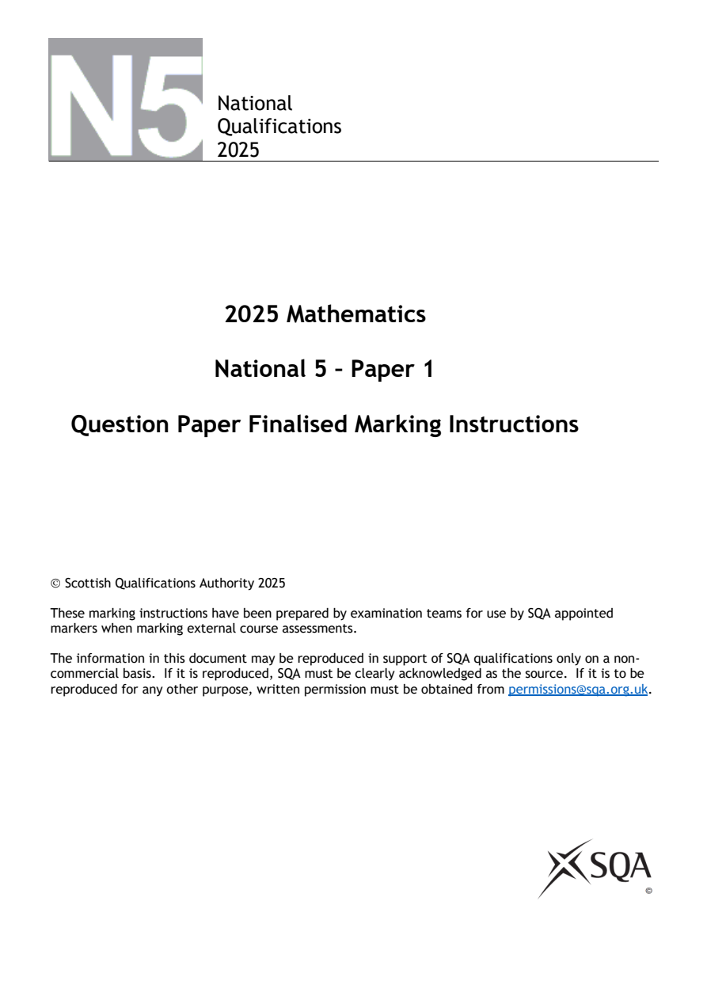
Selectable page text
National
Qualifications
2025
2025 Mathematics
National 5 – Paper 1
Question Paper Finalised Marking Instructions
© Scottish Qualifications Authority 2025
These marking instructions have been prepared by examination teams for use by SQA appointed
markers when marking external course assessments.
The information in this document may be reproduced in support of SQA qualifications only on a non-
commercial basis. If it is reproduced, SQA must be clearly acknowledged as the source. If it is to be
reproduced for any other purpose, written permission must be obtained from permissions@sqa.org.uk.PDF page 2
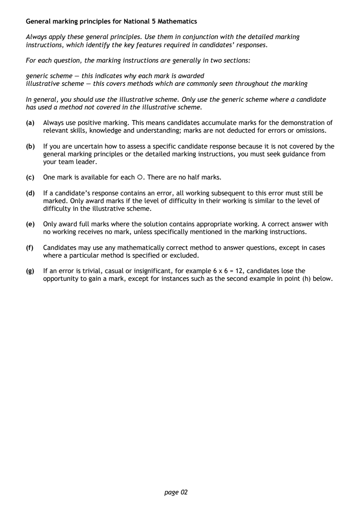
Selectable page text
General marking principles for National 5 Mathematics
Always apply these general principles. Use them in conjunction with the detailed marking
instructions, which identify the key features required in candidates’ responses.
For each question, the marking instructions are generally in two sections:
generic scheme — this indicates why each mark is awarded
illustrative scheme — this covers methods which are commonly seen throughout the marking
In general, you should use the illustrative scheme. Only use the generic scheme where a candidate
has used a method not covered in the illustrative scheme.
(a) Always use positive marking. This means candidates accumulate marks for the demonstration of
relevant skills, knowledge and understanding; marks are not deducted for errors or omissions.
(b) If you are uncertain how to assess a specific candidate response because it is not covered by the
general marking principles or the detailed marking instructions, you must seek guidance from
your team leader.
(c) One mark is available for each . There are no half marks.
(d) If a candidate’s response contains an error, all working subsequent to this error must still be
marked. Only award marks if the level of difficulty in their working is similar to the level of
difficulty in the illustrative scheme.
(e) Only award full marks where the solution contains appropriate working. A correct answer with
no working receives no mark, unless specifically mentioned in the marking instructions.
(f) Candidates may use any mathematically correct method to answer questions, except in cases
where a particular method is specified or excluded.
(g) If an error is trivial, casual or insignificant, for example 6 x 6 = 12, candidates lose the
opportunity to gain a mark, except for instances such as the second example in point (h) below.
page 02PDF page 3
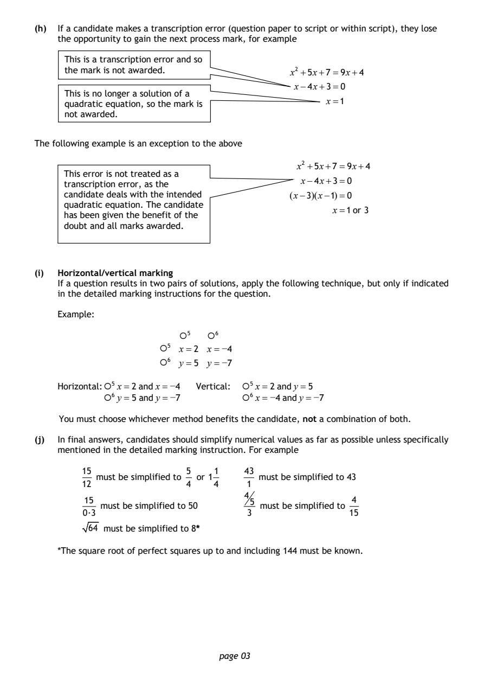
Selectable page text
(h) If a candidate makes a transcription error (question paper to script or within script), they lose
the opportunity to gain the next process mark, for example
This is a transcription error and so
the mark is not awarded. x² +5x+7 =9x+4
x−4x+3=0
This is no longer a solution of a
x=1
quadratic equation, so the mark is
not awarded.
The following example is an exception to the above
x² +5x+7 =9x+4
This error is not treated as a
x−4x+3=0
transcript ion err or, as the
candidate deals with the intended (x−3)(x−1)=0
quadratic equation. The candidate
x=1 or 3
has been given the benefit of the
doubt and all marks awarded.
(i) Horizontal/vertical marking
If a question results in two pairs of solutions, apply the following technique, but only if indicated
in the detailed marking instructions for the question.
Example:
5 6
5 x = 2 x = −4
6 y = 5 y = −7
Horizontal: ⁵ x = 2 and x = −4 Vertical: 5 x = 2 and y = 5
6 y = 5 and y = −7 6 x = −4 and y = −7
You must choose whichever method benefits the candidate, not a combination of both.
(j) In final answers, candidates should simplify numerical values as far as possible unless specifically
mentioned in the detailed marking instruction. For example
15 5 1 43
must be simplified to or 1 must be simplified to 43
12 4 4 1
4
15 5 4
must be simplified to 50 must be simplified to
0·3 3 15
64 must be simplified to 8*
*The square root of perfect squares up to and including 144 must be known.
page 03PDF page 4
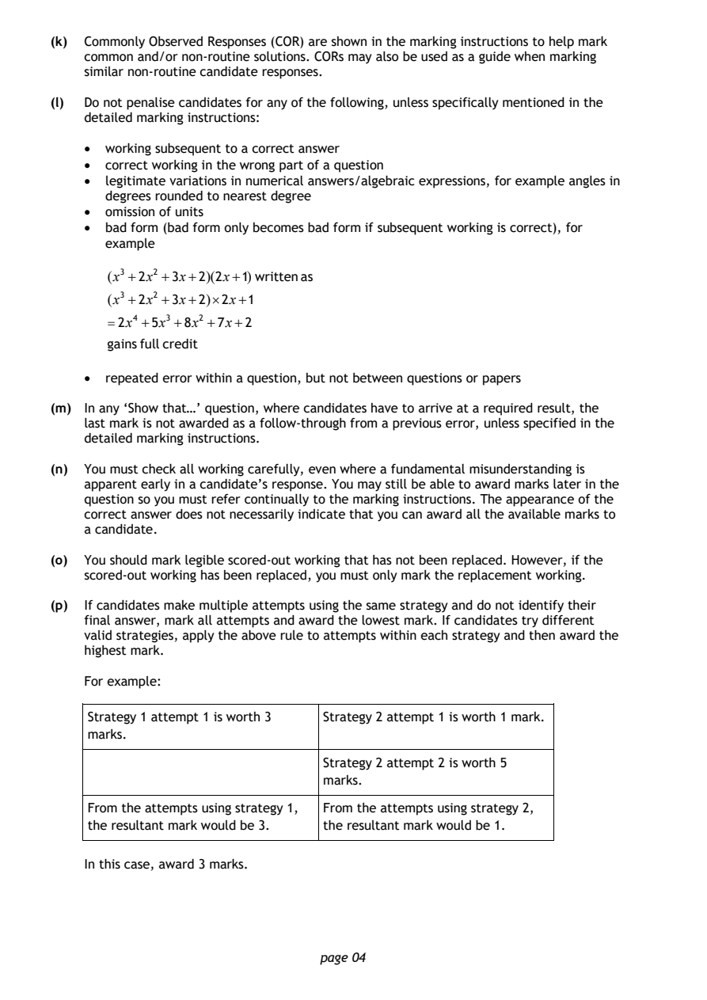
Selectable page text
(k) Commonly Observed Responses (COR) are shown in the marking instructions to help mark
common and/or non-routine solutions. CORs may also be used as a guide when marking
similar non-routine candidate responses.
(l) Do not penalise candidates for any of the following, unless specifically mentioned in the
detailed marking instructions:
• working subsequent to a correct answer
• correct working in the wrong part of a question
• legitimate variations in numerical answers/algebraic expressions, for example angles in
degrees rounded to nearest degree
• omission of units
• bad form (bad form only becomes bad form if subsequent working is correct), for
example
(x³ +2x² +3x+2)(2x+1) written as
(x³ +2x² +3x+2)×2x+1
=2x⁴ +5x³ +8x² +7x+2
gains full credit
• repeated error within a question, but not between questions or papers
(m) In any ‘Show that…’ question, where candidates have to arrive at a required result, the
last mark is not awarded as a follow-through from a previous error, unless specified in the
detailed marking instructions.
(n) You must check all working carefully, even where a fundamental misunderstanding is
apparent early in a candidate’s response. You may still be able to award marks later in the
question so you must refer continually to the marking instructions. The appearance of the
correct answer does not necessarily indicate that you can award all the available marks to
a candidate.
(o) You should mark legible scored-out working that has not been replaced. However, if the
scored-out working has been replaced, you must only mark the replacement working.
(p) If candidates make multiple attempts using the same strategy and do not identify their
final answer, mark all attempts and award the lowest mark. If candidates try different
valid strategies, apply the above rule to attempts within each strategy and then award the
highest mark.
For example:
Strategy 1 attempt 1 is worth 3 Strategy 2 attempt 1 is worth 1 mark.
marks.
Strategy 2 attempt 2 is worth 5
marks.
From the attempts using strategy 1, From the attempts using strategy 2,
the resultant mark would be 3. the resultant mark would be 1.
In this case, award 3 marks.
page 04PDF page 5
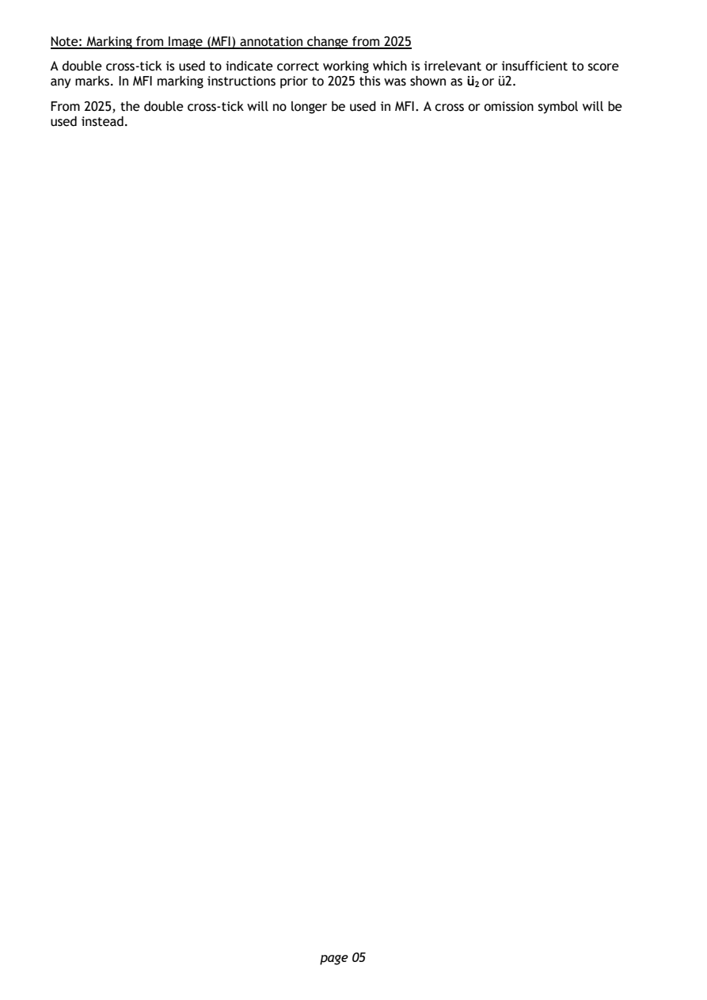
Selectable page text
Note: Marking from Image (MFI) annotation change from 2025
A double cross-tick is used to indicate correct working which is irrelevant or insufficient to score
any marks. In MFI marking instructions prior to 2025 this was shown as ü or ü2.
2
From 2025, the double cross-tick will no longer be used in MFI. A cross or omission symbol will be
used instead.
page 05PDF page 6
Paper 1, Question 1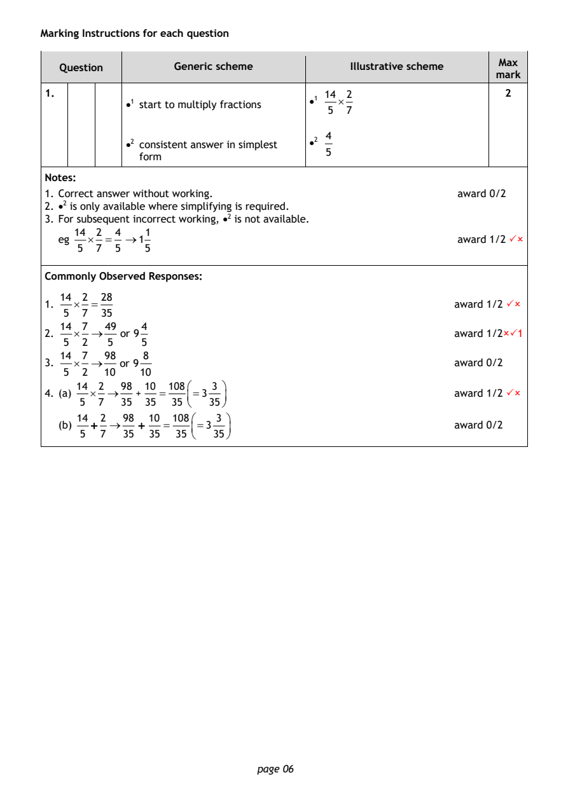
Selectable page text
Marking Instructions for each question
Max
Question Generic scheme Illustrative scheme
mark
1. 14 2 2
•1 start to multiply fractions •1 ×
5 7
4
•2 consistent answer in simplest •2
5
form
Notes:
1. Correct answer without working. award 0/2
2. •² is only available where simplifying is required.
3. For subsequent incorrect working, •² is not available.
14 2 4 1
eg × = →1 award 1/2
5 7 5 5
Commonly Observed Responses:
14 2 28
1. × = award 1/2
5 7 35
14 7 49 4
2. × → or 9 award 1/21
5 2 5 5
14 7 98 8
3. × → or 9 award 0/2
5 2 10 10
14 2 98 10 108 3
4. (a) × → + = =3 award 1/2
5 7 35 35 35 35
14 2 98 10 108 3
(b) + → + = =3 award 0/2
5 7 35 35 35 35
page 06PDF page 7
Paper 1, Question 2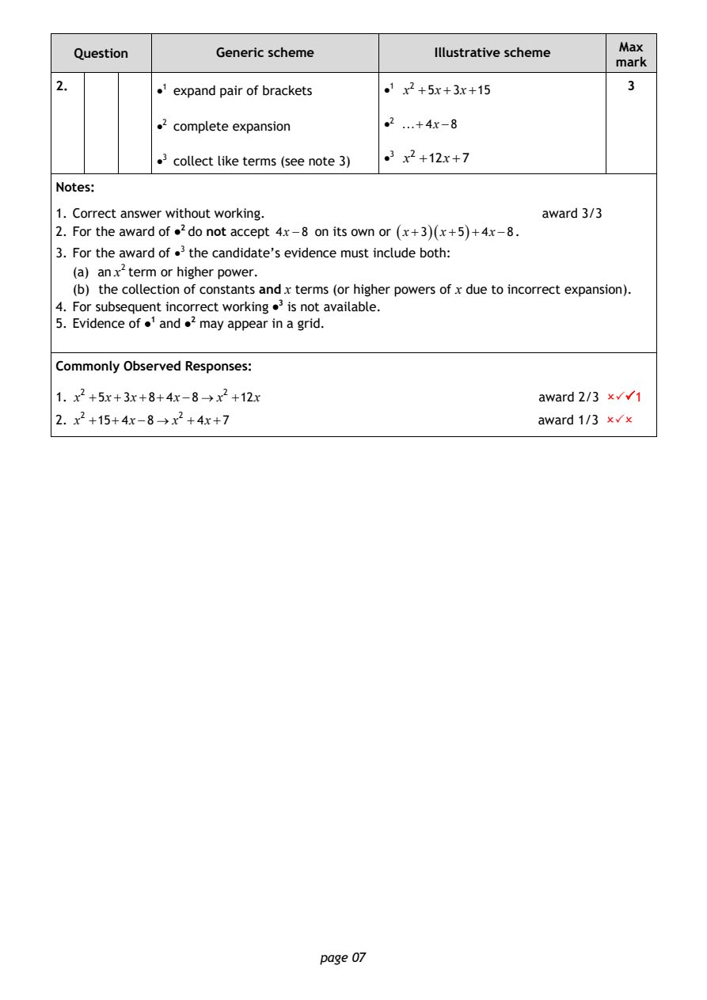
Selectable page text
Max
Question Generic scheme Illustrative scheme
mark
2. •1 expand pair of brackets •1 x² +5x+3x+15 3
•2 complete expansion •2 +4x−8
•3 collect like terms (see note 3) •3 x² +12x+7
Notes:
1. Correct answer without working. award 3/3
2. For the award of •² do not accept 4x−8 on its own or (x+3)(x+5)+4x−8.
3. For the award of •³ the candidate’s evidence must include both:
(a) anx²term or higher power.
(b) the collection of constants and x terms (or higher powers of x due to incorrect expansion).
4. For subsequent incorrect working •³ is not available.
5. Evidence of •¹ and •² may appear in a grid.
Commonly Observed Responses:
1. x² +5x+3x+8+4x−8→x² +12x award 2/3 1
2. x² +15+4x−8→x² +4x+7 award 1/3
page 07PDF page 8
Paper 1, Question 3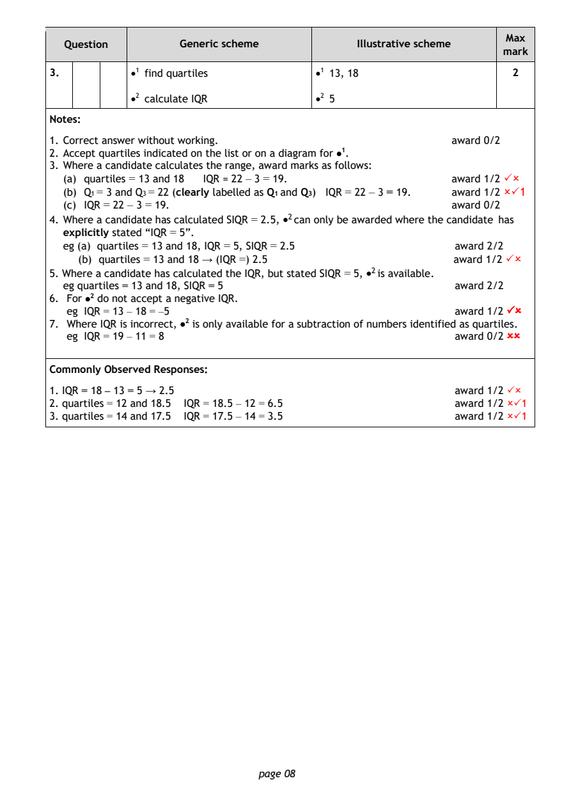
Selectable page text
Max
Question Generic scheme Illustrative scheme
mark
3. •1 find quartiles •1 13, 18 2
•2 calculate IQR •2 5
Notes:
1. Correct answer without working. award 0/2
2. Accept quartiles indicated on the list or on a diagram for •¹.
3. Where a candidate calculates the range, award marks as follows:
(a) quartiles = 13 and 18 IQR = 22 – 3 = 19. award 1/2
(b) Q = 3 and Q = 22 (clearly labelled as Q and Q ) IQR = 22 – 3 = 19. award 1/2 1
1 3 1 3
(c) IQR = 22 – 3 = 19. award 0/2
4. Where a candidate has calculated SIQR = 2.5, •²can only be awarded where the candidate has
explicitly stated “IQR = 5”.
eg (a) quartiles = 13 and 18, IQR = 5, SIQR = 2.5 award 2/2
(b) quartiles = 13 and 18 → (IQR =) 2.5 award 1/2
5. Where a candidate has calculated the IQR, but stated SIQR = 5, •²is available.
eg quartiles = 13 and 18, SIQR = 5 award 2/2
6. For •² do not accept a negative IQR.
eg IQR = 13 – 18 = –5 award 1/2
7. Where IQR is incorrect, •² is only available for a subtraction of numbers identified as quartiles.
eg IQR = 19 – 11 = 8 award 0/2
Commonly Observed Responses:
1. IQR = 18 – 13 = 5 → 2.5 award 1/2
2. quartiles = 12 and 18.5 IQR = 18.5 – 12 = 6.5 award 1/2 1
3. quartiles = 14 and 17.5 IQR = 17.5 – 14 = 3.5 award 1/2 1
page 08PDF page 9
Paper 1, Question 4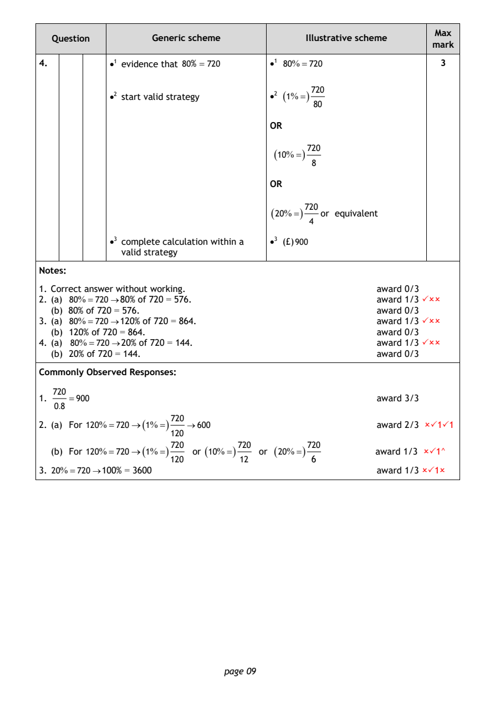
Selectable page text
Max
Question Generic scheme Illustrative scheme
mark
4. •1 evidence that 80% = 720 •1 80%=720 3
720
•2 start valid strategy •2 ( 1%=)
80
OR
( 10%=)
720
8
OR
720
( 20%=) or equivalent
4
•3 complete calculation within a •3 (£)900
valid strategy
Notes:
1. Correct answer without working. award 0/3
2. (a) 80%=720→80% of 720 = 576. award 1/3
(b) 80% of 720 = 576. award 0/3
3. (a) 80%=720→120% of 720 = 864. award 1/3
(b) 120% of 720 = 864. award 0/3
4. (a) 80%=720→20% of 720 = 144. award 1/3
(b) 20% of 720 = 144. award 0/3
Commonly Observed Responses:
720
1. =900 award 3/3
0.8
720
2. (a) For 120%=720→( 1%=) →600 award 2/3 11
120
720 720 720
(b) For 120%=720→( 1%=) or ( 10%=) or ( 20%=) award 1/3 1^
120 12 6
3. 20%=720→100% = 3600 award 1/3 1
page 09PDF page 10
Paper 1, Question 5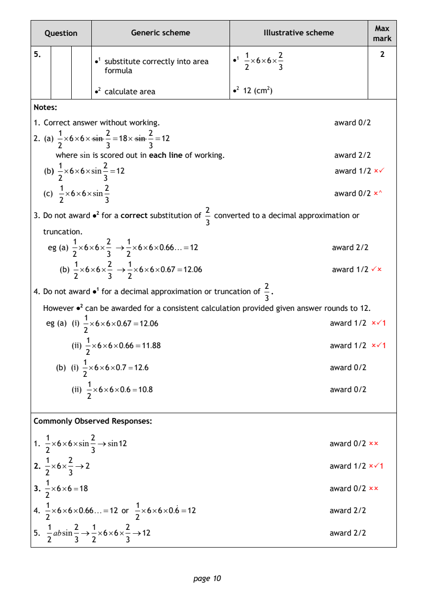
Selectable page text
Max
Question Generic scheme Illustrative scheme
mark
5. 1 2 2
•1 substitute correctly into area •1 ×6×6×
2 3
formula
•2 calculate area •2 12 (cm²)
Notes:
1. Correct answer without working. award 0/2
1 2 2
2. (a) ×6×6× sin =18× sin =12
2 3 3
where sin is scored out in each line of working. award 2/2
1 2
(b) ×6×6×sin =12 award 1/2
2 3
1 2
(c) ×6×6×sin award 0/2 ^
2 3
2
3. Do not award •² for a correct substitution of converted to a decimal approximation or
3
truncation.
1 2 1
eg (a) ×6×6× → ×6×6×0.66 =12 award 2/2
2 3 2
1 2 1
(b) ×6×6× → ×6×6×0.67=12.06 award 1/2
2 3 2
2
4. Do not award •¹ for a decimal approximation or truncation of .
3
However •² can be awarded for a consistent calculation provided given answer rounds to 12.
1
eg (a) (i) ×6×6×0.67=12.06 award 1/2 1
2
1
(ii) ×6×6×0.66=11.88 award 1/2 1
2
1
(b) (i) ×6×6×0.7 =12.6 award 0/2
2
1
(ii) ×6×6×0.6=10.8 award 0/2
2
Commonly Observed Responses:
1 2
1. ×6×6×sin →sin12 award 0/2
2 3
1 2
2. ×6× →2 award 1/2 1
2 3
1
3. ×6×6=18 award 0/2
2
1 1
4. ×6×6×0.66 =12 or ×6×6×0.6=12 award 2/2
2 2
1 2 1 2
5. absin → ×6×6× →12 award 2/2
2 3 2 3
page 10PDF page 11
Paper 1, Question 6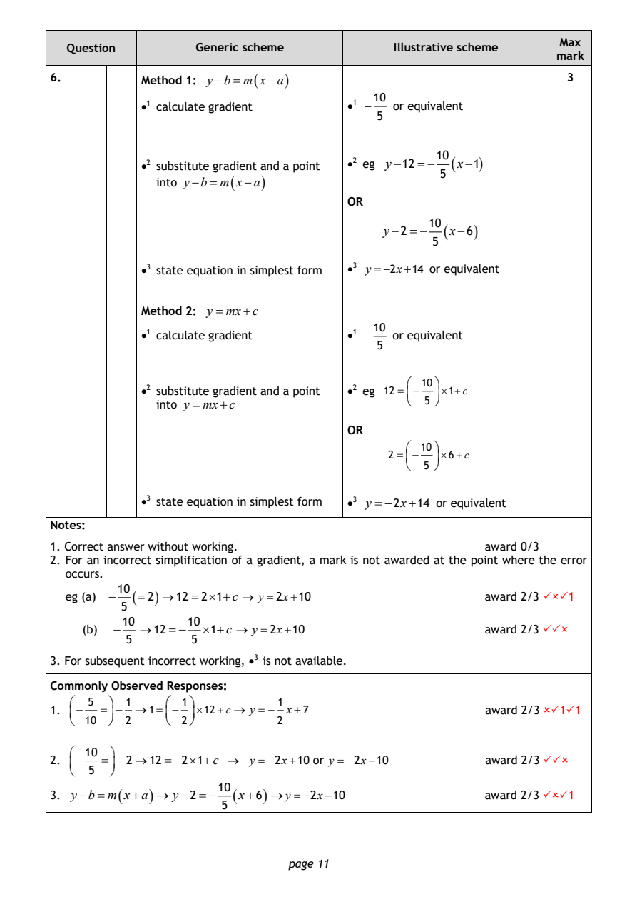
Selectable page text
Max
Question Generic scheme Illustrative scheme
mark
6. Method 1: y−b=m(x−a) 3
10
•1 calculate gradient •1 − or equivalent
5
10
•2 substitute gradient and a point •2 eg y−12=− (x−1)
5
into y−b=m(x−a)
OR
10
y−2=− (x−6)
5
•3 state equation in simplest form •3 y=−2x+14 or equivalent
Method 2: y =mx+c
10
•1 calculate gradient •1 − or equivalent
5
10
•2 substitute gradient and a point •2 eg 12=− ×1+c
into y =mx+c 5
OR
10
2=− ×6+c
5
•3 state equation in simplest form •3 y=−2x+14 or equivalent
Notes:
1. Correct answer without working. award 0/3
2. For an incorrect simplification of a gradient, a mark is not awarded at the point where the error
occurs.
10
eg (a) − (=2) →12=2×1+c → y =2x+10 award 2/3 1
5
10 10
(b) − →12=− ×1+c → y =2x+10 award 2/3
5 5
3. For subsequent incorrect working, •³ is not available.
Commonly Observed Responses:
5 1 1 1
1. − =− →1=− ×12+c→ y =− x+7 award 2/3 11
10 2 2 2
10
2. − = −2→12=−2×1+c → y =−2x+10 or y =−2x−10 award 2/3
5
10
3. y−b=m(x+a)→ y−2=− (x+6)→y =−2x−10 award 2/3 1
5
page 11PDF page 12
Paper 1, Question 7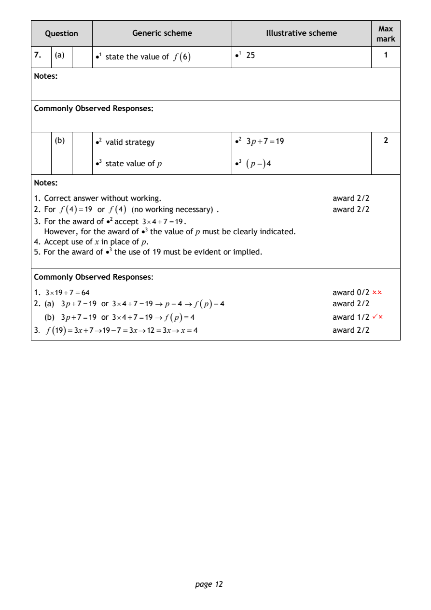
Selectable page text
Max
Question Generic scheme Illustrative scheme
mark
7. (a) •1 state the value of f (6) •1 25 1
Notes:
Commonly Observed Responses:
(b) •2 valid strategy •2 3p+7=19 2
•3 state value of p •3 (p =)4
Notes:
1. Correct answer without working. award 2/2
2. For f (4)=19 or f (4) (no working necessary) . award 2/2
3. For the award of •² accept 3×4+7=19.
However, for the award of •³ the value of p must be clearly indicated.
4. Accept use of x in place of p.
5. For the award of •³ the use of 19 must be evident or implied.
Commonly Observed Responses:
1. 3×19+7 =64 award 0/2
2. (a) 3p+7=19 or 3×4+7=19 → p=4 → f (p) =4 award 2/2
(b) 3p+7=19 or 3×4+7=19 → f (p) =4 award 1/2
3. f (19)=3x+7→19−7=3x→12=3x→x=4 award 2/2
page 12PDF page 13
Paper 1, Question 8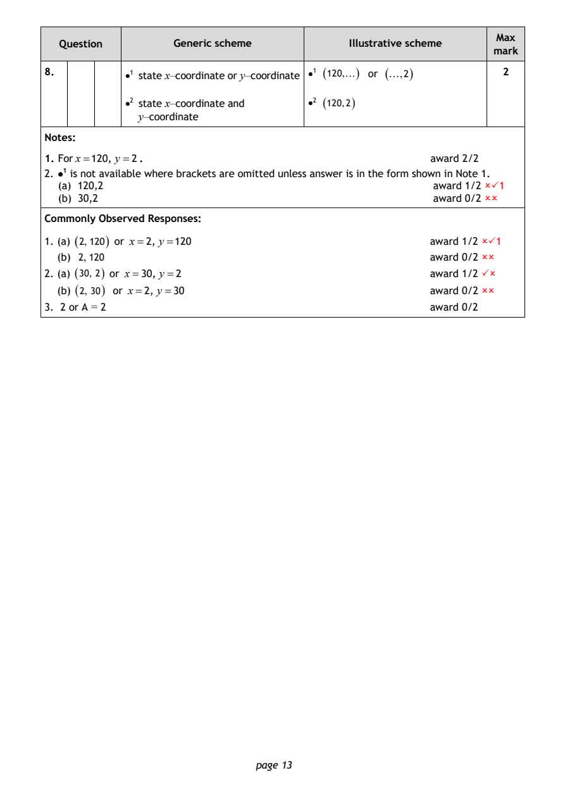
Selectable page text
Max
Question Generic scheme Illustrative scheme
mark
8. •1 state x–coordinate or y–coordinate •¹ (120, ) or ( ,2) 2
•2 state x–coordinate and •2 (120,2)
y–coordinate
Notes:
1. Forx=120, y=2. award 2/2
2. •¹ is not available where brackets are omitted unless answer is in the form shown in Note 1.
(a) 120,2 award 1/2 1
(b) 30,2 award 0/2
Commonly Observed Responses:
1. (a) (2,120) or x=2, y=120 award 1/2 1
(b) 2,120 award 0/2
2. (a) (30, 2) or x=30, y=2 award 1/2
(b) (2, 30) or x=2, y=30 award 0/2
3. 2 or A = 2 award 0/2
page 13PDF page 14
Paper 1, Question 9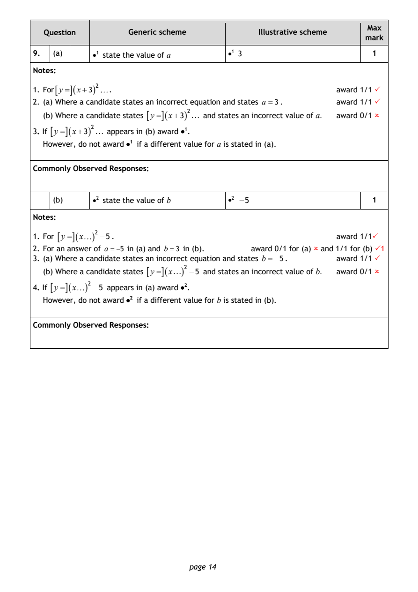
Selectable page text
Max
Question Generic scheme Illustrative scheme
mark
9. (a) •1 state the value of a •1 3 1
Notes:
1. For[y =](x+3)² . award 1/1
2. (a) Where a candidate states an incorrect equation and states a =3. award 1/1
(b) Where a candidate states [y =](x+3)² and states an incorrect value of a. award 0/1
3. If [y =](x+3)² appears in (b) award •¹.
However, do not award •¹ if a different value for a is stated in (a).
Commonly Observed Responses:
(b) •2 state the value of b •2 −5 1
Notes:
1. For [y =](x )² −5. award 1/1
2. For an answer of a =−5 in (a) and b=3 in (b). award 0/1 for (a) and 1/1 for (b) 1
3. (a) Where a candidate states an incorrect equation and states b=−5. award 1/1
(b) Where a candidate states [y =](x )² −5 and states an incorrect value of b. award 0/1
4. If [y =](x )² −5 appears in (a) award •².
However, do not award •² if a different value for b is stated in (b).
Commonly Observed Responses:
page 14PDF page 15
Paper 1, Question 10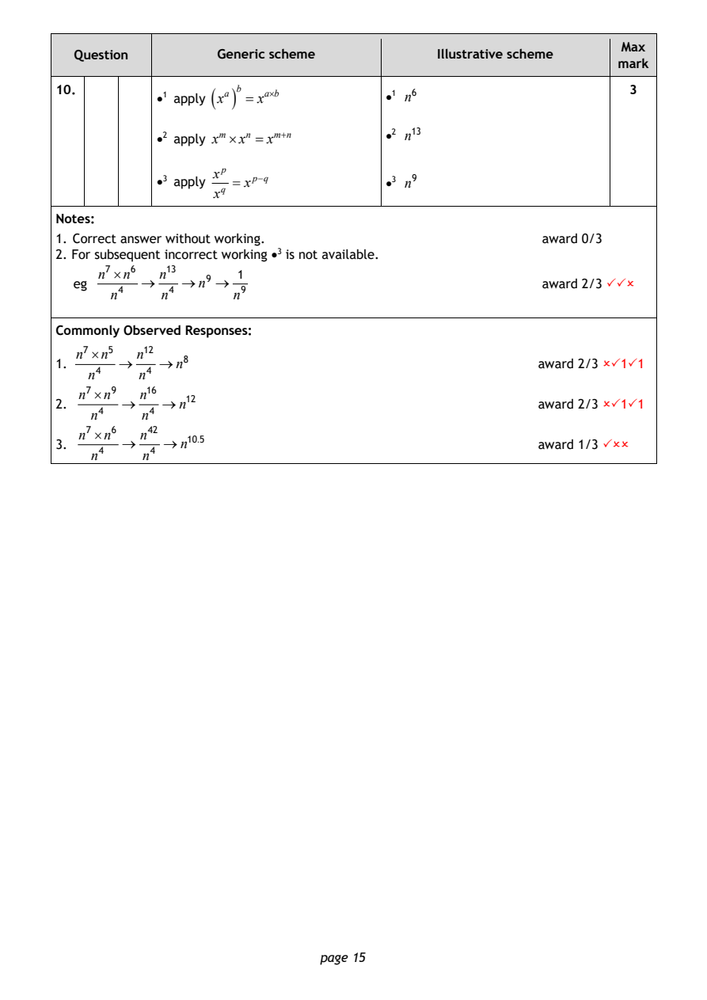
Selectable page text
Max
Question Generic scheme Illustrative scheme
mark
10. •1 apply ( x^{a} ) ^{b} = x^{a}^{×}^{b} •1 n⁶ 3
•2 apply x^{m}×xⁿ = x^{m}⁺ⁿ •2 n¹³
x^{p}
•3 apply = x^{p}⁻^{q} •3 n⁹
x^{q}
Notes:
1. Correct answer without working. award 0/3
2. For subsequent incorrect working •³ is not available.
n⁷×n⁶ n¹³ 1
eg → →n⁹ → award 2/3
n⁴ n⁴ n⁹
Commonly Observed Responses:
n⁷×n⁵ n¹²
1. → →n⁸ award 2/3 11
n⁴ n⁴
n⁷×n⁹ n¹⁶
2. → →n¹² award 2/3 11
n⁴ n⁴
n⁷×n⁶ n⁴²
3. → →n¹⁰^{.}⁵ award 1/3
n⁴ n⁴
page 15PDF page 16
Paper 1, Question 11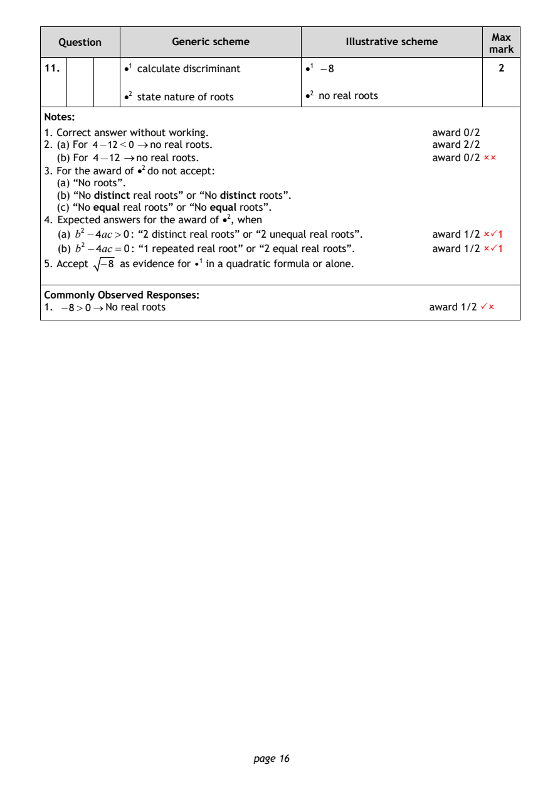
Selectable page text
Max
Question Generic scheme Illustrative scheme
mark
11. •1 calculate discriminant •1 −8 2
•2 state nature of roots •2 no real roots
Notes:
1. Correct answer without working. award 0/2
2. (a) For 4 12<0 →no real roots. award 2/2
(b) For 4 12 →no real roots. award 0/2
3. For the award of •² do not accept:
(a) “No roots”.
(b) “No distinct real roots” or “No distinct roots”.
(c) “No equal real roots” or “No equal roots”.
4. Expected answers for the award of •², when
(a) b² −4ac>0: “2 distinct real roots” or “2 unequal real roots”. award 1/2 1
(b) b² −4ac=0: “1 repeated real root” or “2 equal real roots”. award 1/2 1
5. Accept −8 as evidence for •¹ in a quadratic formula or alone.
Commonly Observed Responses:
1. −8>0→No real roots award 1/2
page 16PDF page 17
Paper 1, Question 12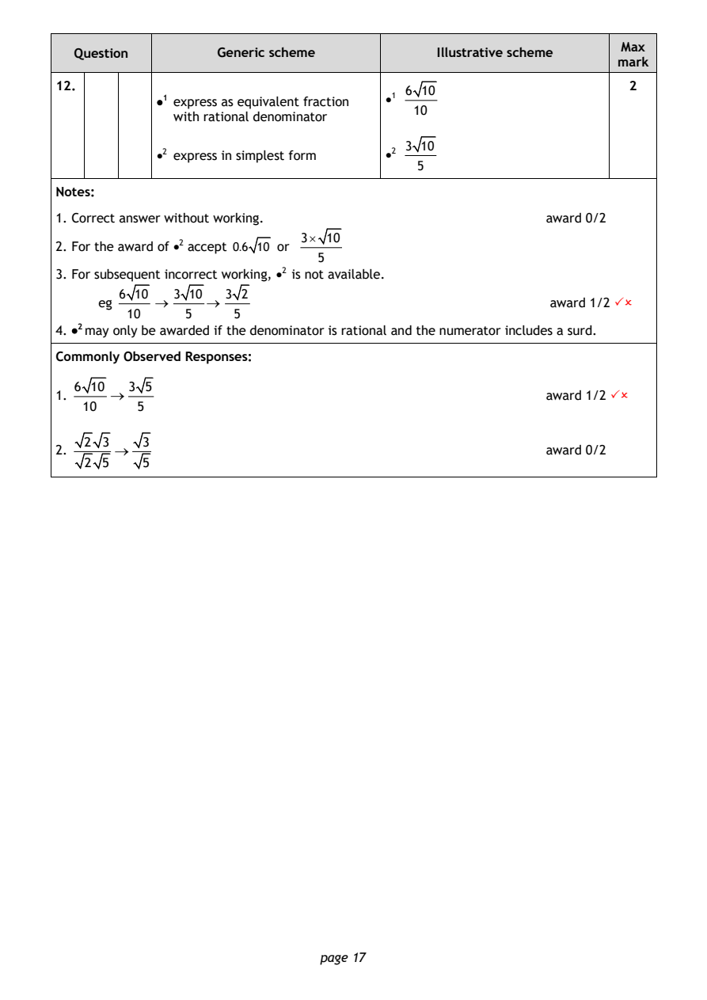
Selectable page text
Max
Question Generic scheme Illustrative scheme
mark
12. 2
6 10
•1 express as equivalent fraction •1
10
with rational denominator
3 10
•2 express in simplest form •2
5
Notes:
1. Correct answer without working. award 0/2
3× 10
2. For the award of •² accept 0.6 10 or
5
3. For subsequent incorrect working, •² is not available.
6 10 3 10 3 2
eg → → award 1/2
10 5 5
4. •² may only be awarded if the denominator is rational and the numerator includes a surd.
Commonly Observed Responses:
6 10 3 5
1. → award 1/2
10 5
2 3 3
2. → award 0/2
2 5 5
page 17PDF page 18
Paper 1, Question 13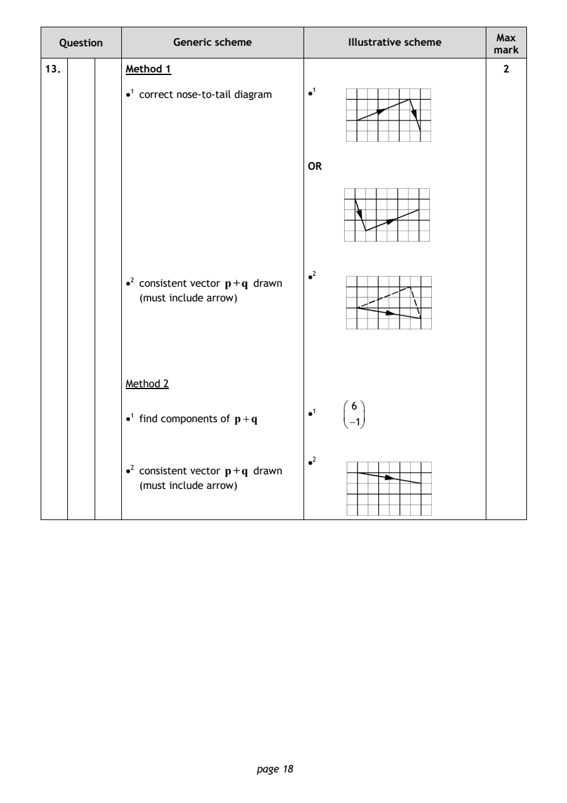
Selectable page text
Max
Question Generic scheme Illustrative scheme
mark
13. Method 1 2
•1 correct nose-to-tail diagram •1
OR
•2
•2 consistent vector p+q drawn
(must include arrow)
Method 2
6
•1 find components of p+q
•1
−1
•2
•2 consistent vector p+q drawn
(must include arrow)
page 18PDF page 19
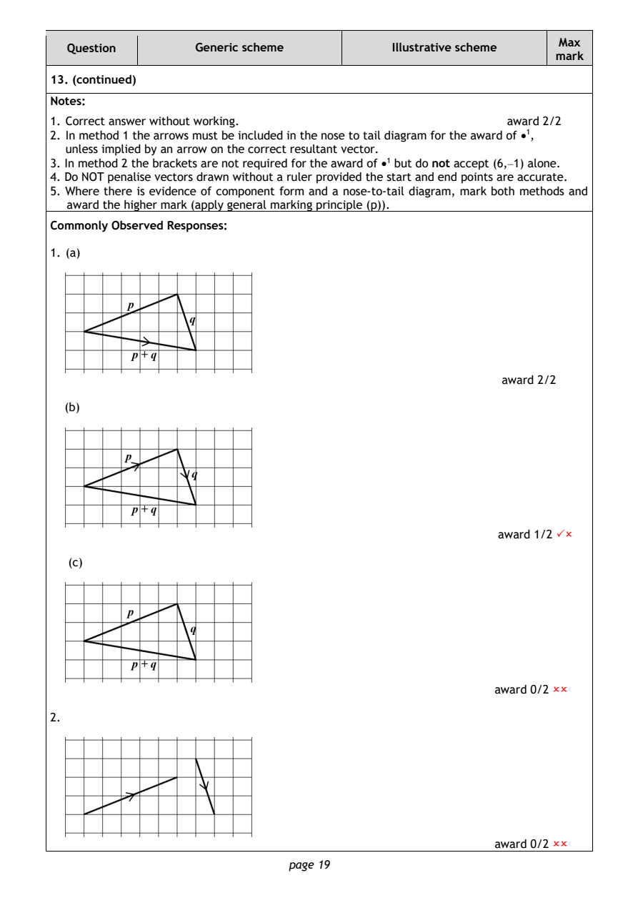
Selectable page text
Max
Question Generic scheme Illustrative scheme
mark
13. (continued)
Notes:
1. Correct answer without working. award 2/2
2. In method 1 the arrows must be included in the nose to tail diagram for the award of •¹,
unless implied by an arrow on the correct resultant vector.
3. In method 2 the brackets are not required for the award of •¹ but do not accept (6,–1) alone.
4. Do NOT penalise vectors drawn without a ruler provided the start and end points are accurate.
5. Where there is evidence of component form and a nose-to-tail diagram, mark both methods and
award the higher mark (apply general marking principle (p)).
Commonly Observed Responses:
1. (a)
award 2/2
(b)
award 1/2
(c)
award 0/2
2.
award 0/2
page 19PDF page 20
Paper 1, Question 14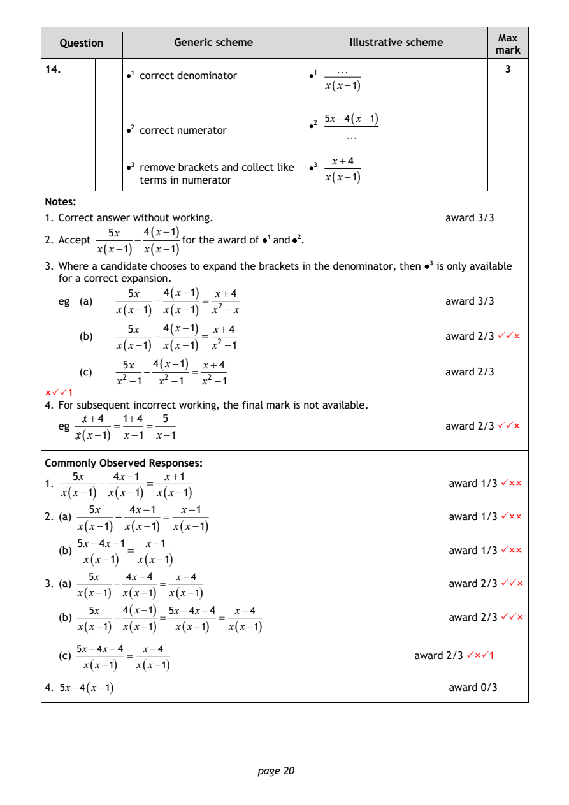
Selectable page text
Max
Question Generic scheme Illustrative scheme
mark
14. 3
•1 correct denominator •1
x(x−1)
5x−4(x−1)
•2 correct numerator
•2
x+4
•3 remove brackets and collect like •3
terms in numerator
x(x−1)
Notes:
1. Correct answer without working. award 3/3
5x
4(x−1)
2. Accept − for the award of •¹ and •².
x(x−1) x(x−1)
3. Where a candidate chooses to expand the brackets in the denominator, then •³ is only available
for a correct expansion.
5x
4(x−1)
x+4
eg (a) − = award 3/3
x(x−1) x(x−1) x² −x
5x
4(x−1)
x+4
(b) − = award 2/3
x(x−1) x(x−1) x² −1
5x
4(x−1)
x+4
(c) − = award 2/3
x² −1 x² −1 x² −1
1
4. For subsequent incorrect working, the final mark is not available.
x/ +4 1+4 5
eg = = award 2/3
x/ (x−1) x−1 x−1
Commonly Observed Responses:
5x 4x−1 x+1
1. − = award 1/3
x(x−1) x(x−1) x(x−1)
5x 4x−1 x−1
2. (a) − = award 1/3
x(x−1) x(x−1) x(x−1)
5x−4x−1 x−1
(b) = award 1/3
x(x−1) x(x−1)
5x 4x−4 x −4
3. (a) − = award 2/3
x(x−1) x(x−1) x(x−1)
5x 4(x−1) 5x−4x−4 x −4
(b) − = = award 2/3
x(x−1) x(x−1) x(x−1) x(x−1)
5x−4x−4 x −4
(c) = award 2/3 1
x(x−1) x(x−1)
4. 5x−4(x−1) award 0/3
page 20PDF page 21
Paper 1, Question 15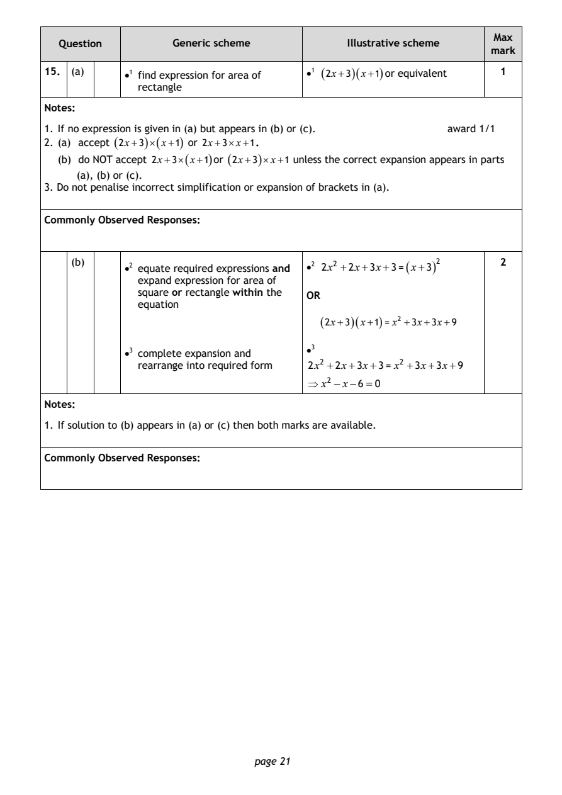
Selectable page text
Max
Question Generic scheme Illustrative scheme
mark
15. (a) •1 find expression for area of •1 (2x+3)(x+1)or equivalent 1
rectangle
Notes:
1. If no expression is given in (a) but appears in (b) or (c). award 1/1
2. (a) accept (2x+3)×(x+1) or 2x+3×x+1.
(b) do NOT accept 2x+3×(x+1)or (2x+3)×x+1 unless the correct expansion appears in parts
(a), (b) or (c).
3. Do not penalise incorrect simplification or expansion of brackets in (a).
Commonly Observed Responses:
(b) •2 equate required expressions and •2 2x² +2x+3x+3=(x+3)² 2
expand expression for area of
square or rectangle within the
OR
equation
(2x+3)(x+1)= x² +3x+3x+9
•3 complete expansion and •3
rearrange into required form 2x² +2x+3x+3= x² +3x+3x+9
⇒ x² −x−6=0
Notes:
1. If solution to (b) appears in (a) or (c) then both marks are available.
Commonly Observed Responses:
page 21PDF page 22
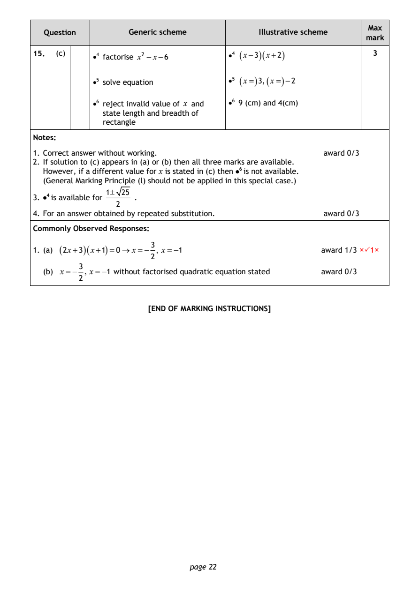
Selectable page text
Max
Question Generic scheme Illustrative scheme
mark
15. (c) •4 factorise x² −x−6 •4 (x−3)(x+2) 3
•5 solve equation •5 (x=)3,(x=)−2
•6 reject invalid value of x and •6 9 (cm) and 4(cm)
state length and breadth of
rectangle
Notes:
1. Correct answer without working. award 0/3
2. If solution to (c) appears in (a) or (b) then all three marks are available.
However, if a different value for x is stated in (c) then •⁶ is not available.
(General Marking Principle (l) should not be applied in this special case.)
1± 25
3. •⁴ is available for .
2
4. For an answer obtained by repeated substitution. award 0/3
Commonly Observed Responses:
3
1. (a) (2x+3)(x+1)=0→x=− , x=−1 award 1/3 1
2
3
(b) x=− , x=−1 without factorised quadratic equation stated award 0/3
2
[END OF MARKING INSTRUCTIONS]
page 22